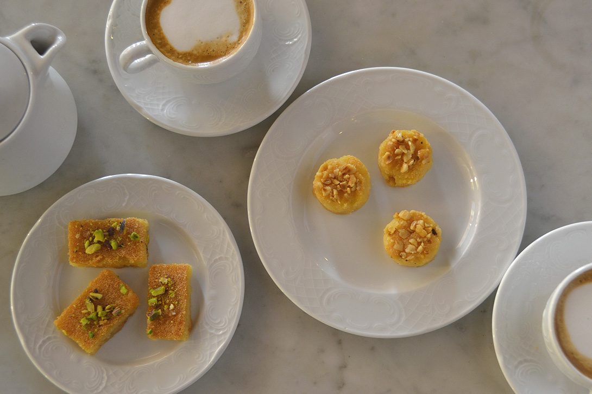
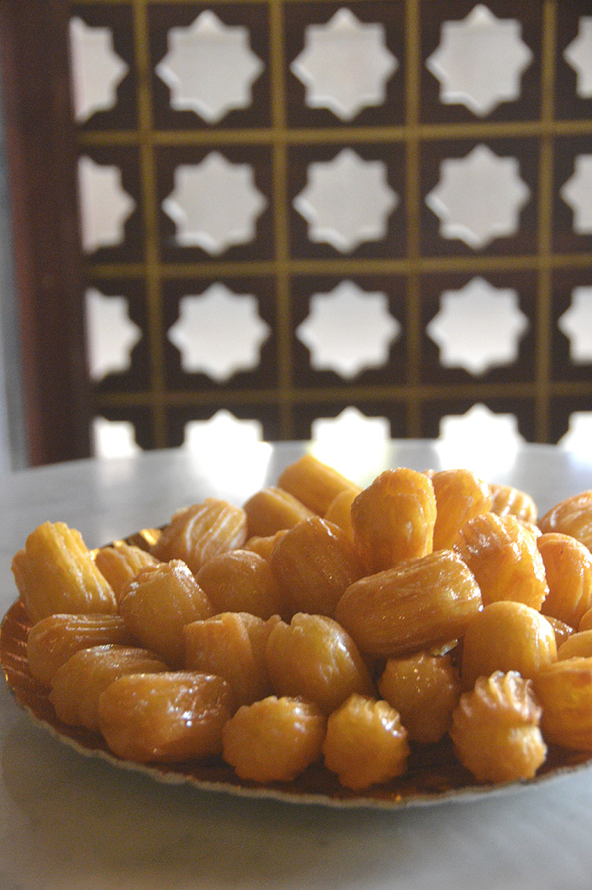
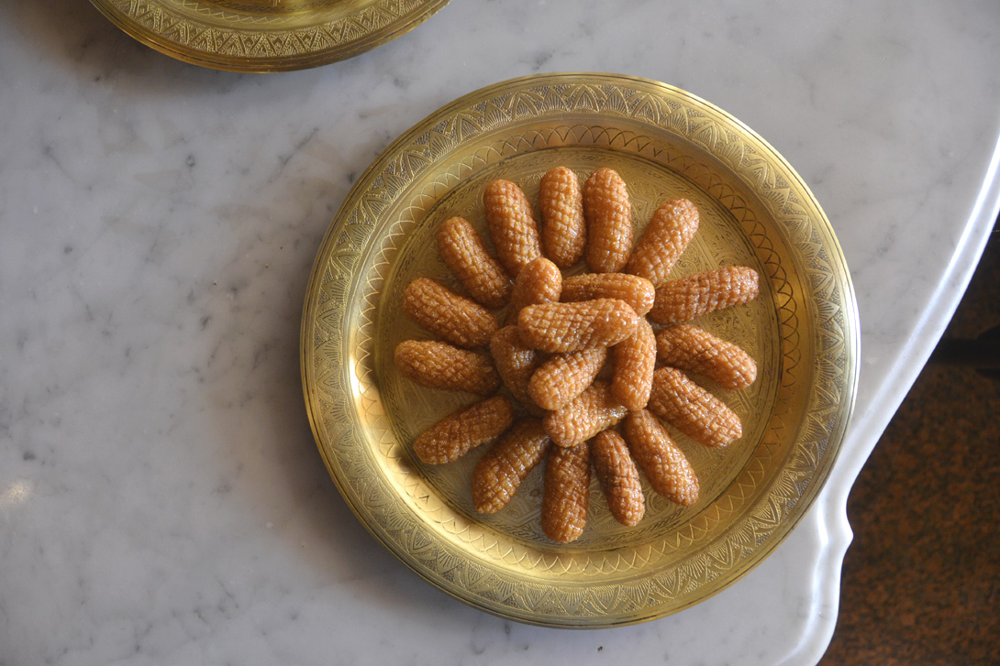
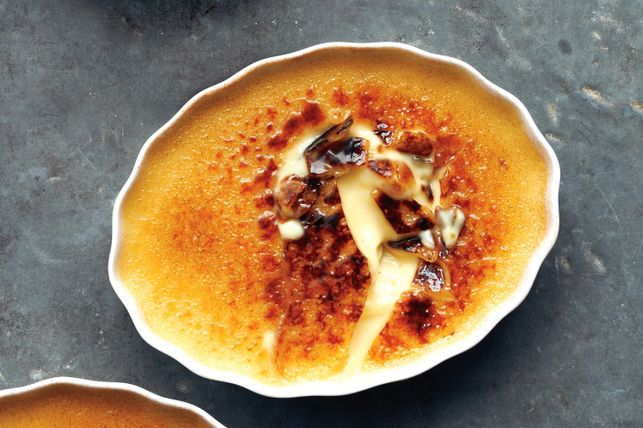

Egyptian and regional desserts offer an endless variety �whether you like them syrupy sweet or
with orange blossom water.This post is sponsored by InterContinental Cairo Semiramis.
Egypt has a huge array of sweetsto be savored over the best strong coffee or at
its numerous bustling cafes.Egyptian and local desserts are especially popular during Ramadan, when even
families on a budget don�t hesitate to splurge and put the finest on their tables.
There are long lines at the pastry shops downtown as everyone stocks up on their goodies. Iftar guests
often bring boxes of sweets for their hosts.But where can you start sampling amid such a wide variety?
I head to the Cafe Corniche at InterContinentalCairo Semiramis Cairo Semiramisand spend a few glorious days tasting
all the traditional desserts that Egypt and the region has to offer.
And I talk with the team of cooks about what goes into making these sweets,and the traditions behind the dishes.
The Cafe Corniche is tucked into a quiet corner we will talk about the best sweets in Egypt
1. BASBOUSA

semolina
sugar
ghee
3 eggs
milk
Vanilla sprinkle.
This famous semolina sweet cake is likely what comes to mind when you think of Middle Eastern sweets. Rich, heavy and syrupy, basbousa is a decadent
little square that feels like pure sugar melting on your tongue It should be topped with a spoonful of yogurt to break that sweetness down, or paired
with bitter coffee or mint tea, says Assistant Chef Khaled Hussein at Cafe Corniche.
� semolina, sugar, ghee and milk � make this a humble and simple dessert that�s not difficult to prepare.
Basbousa is one of Egypt�s most popular desserts.
2. BALAHELSHAM

Delicate cup.
Cup water.
A quarter of a cup ofoil.
3 eggs.
a small spoonful of starch;
Vanilla sprinkle.
Pinch of salt.
sorbet
One of the most syrupy Ramadan sweets of them all, Balah el Sham are crunchy on the outside and sweet
and chewy on the inside. They�re best eaten with a dash of yogurt or with strong coffee to break up that intensity of sugar.
They�re also sold as a street food in Cairo during Ramadan. The food carts fill the air with the sweet and intoxicating
the air with the sweet and intoxicating scent of frying dough that�s difficult to resist.
3. ASABE ZEINAB

Flour: a cup
Fine semolina: 2 cups
Baking powder: a tablespoon
Instant yeast: 1 teaspoon
Sugar: a tablespoon
Salt: a quarter of a teaspoon
Olive oil: 2 tablespoons
Warm water: � cup (for dough)
this sweet dessert literally translates to �Zeinab�s fingers.� It�s reportedly the century-old
invention of a woman of the same name.To make these Ramadan sweets, roll and then cut the pastry,
then fry it and coat it with syrup
4. CINNAMON-HONEY CREME BRULEE

blue eyes.
3 cups thickened cream
1 cup milk
4 cinnamon sticks
1/4 tsp salt
1/4 cup honey
1/2 cup caster sugar
9 large egg yolks
1/2 cup caster sugar, extra
this desrert is the most popular in asia Are you also fond of a good cr�me br�l�e? Then you will
probably also like this variant, spiced up with cinnamon and sweet honey. And with this recipe,your custard
will certainly not fail. Creamy pudding under the crunchy sugar coating. A tasty and fun dessert: cinnamon honey cr�me br�l�e.